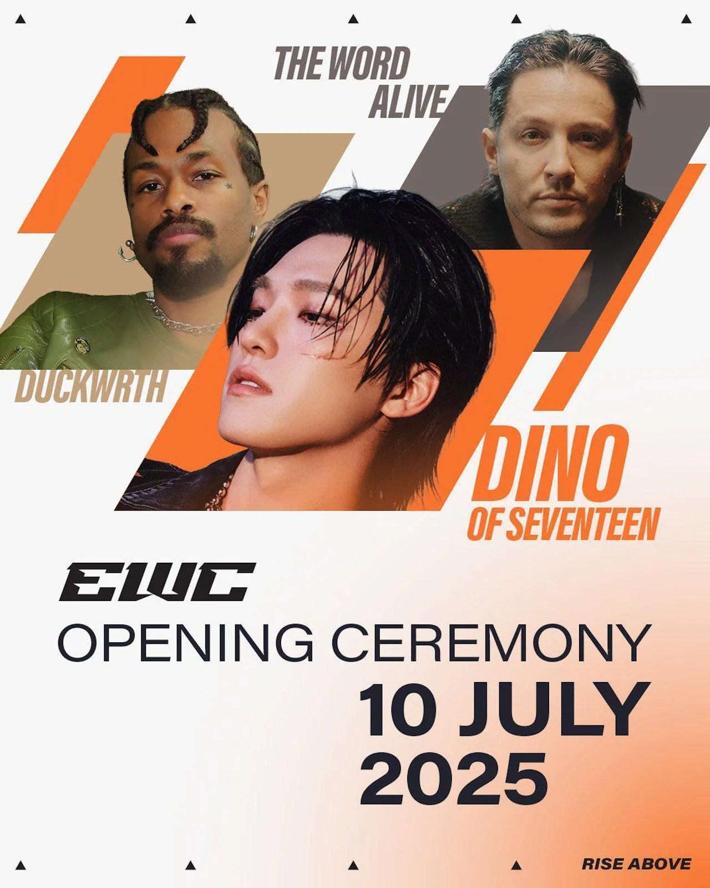
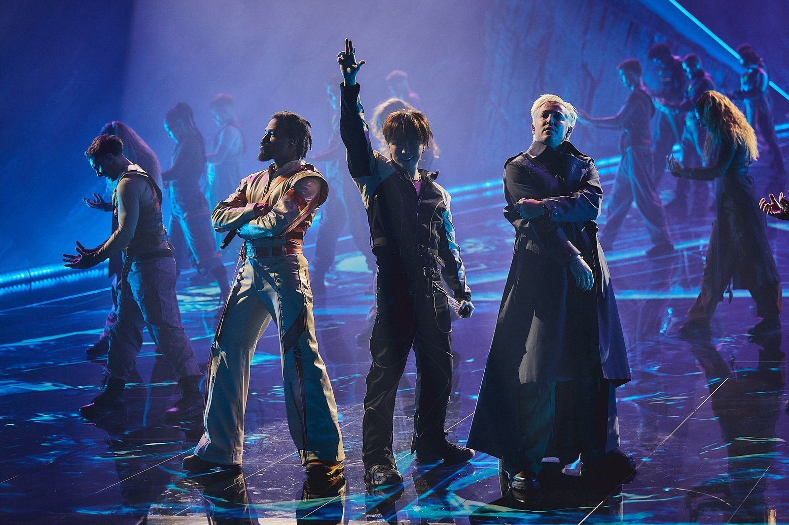
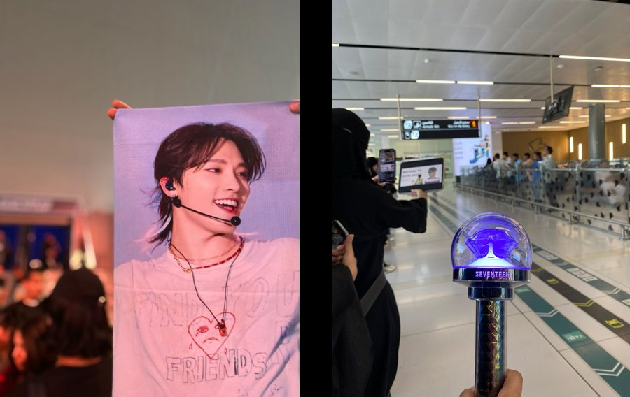
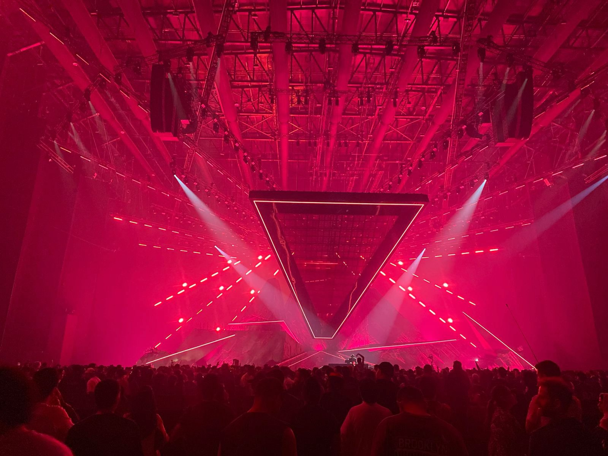
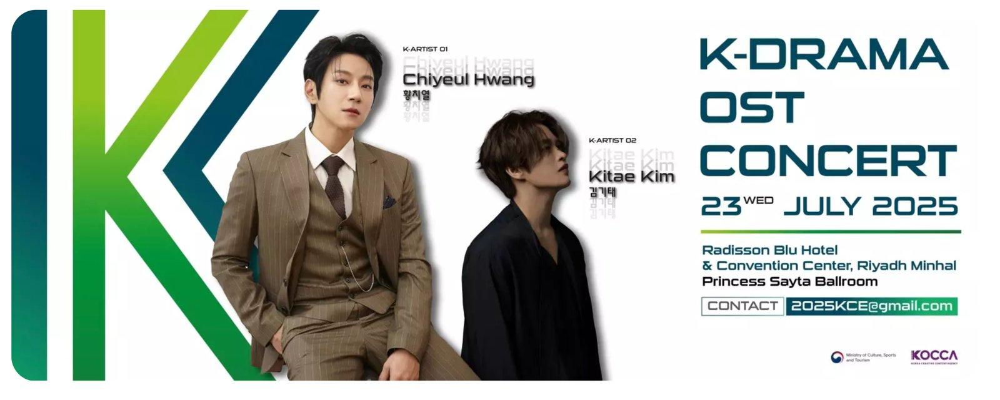

지난해 사우디에서 열릴 예정이었던 KCON 2024가 예매율 저조로 취소돼 사우디 한류 팬들에게 많은 아쉬움을 남겼다. 그러나 2025년 여름 한국 가수들의 공연이 리야드에서 이어지며 현지 케이팝 팬들의 기대에 부응하고 있다.
세븐틴 디노, 사우디서 열린 2025년 e스포츠 월드컵 개막 공연 장식
2025년 7월 10일 리야드 문화·엔터테인먼트 복합 구역 볼리바드 시티(Boulevard City)에 위치한 ANB 아레나에서 e스포츠 월드컵(EWC) 개막 오프닝 공연이 열렸다. 이 무대에서 케이팝 그룹 세븐틴의 멤버 디노가 세계적인 아티스트들과 어깨를 나란히 했다.

▲ 개막 공연 홍보 포스터 — 출처: PR Newswire

▲ 세븐틴 디노, 덕워스, 텔 스미스 합동 공연 — 출처: Esports World Cup Foundation
디노는 미국 래퍼 덕워스(Duckwrth), 록 밴드 더 워드 얼라이브(The Word Alive)의 보컬 텔 스미스(Telle Smith)와 함께 공식 테마곡 <Til My Fingers Bleed>를 열창하며 뜨거운 호응을 이끌어냈다. 케이팝, 힙합, 록을 결합한 장르 혼합형 협업 무대는 현장 분위기를 압도했고 소셜미디어에서도 폭발적인 반응을 얻었다. 공연 당일 ANB 아레나에는 수천 명의 관객이 운집했으며 팬들은 공항에서도 세븐틴 디노를 환영했다. 현지 팬 니스린(2000년생)은 "케이팝 아티스트의 공연을 직접 본 건 오랜만이라 감격스러웠다."고 말하며 리야드 입국 장면부터 공연까지 전 과정을 직접 촬영해 공유했다.


▲ (좌) 리야드 킹칼리드국제공항에서 세븐틴 디노를 환대하는 사우디 팬들 · (우) 개막식 공연 현장 — 출처: 사우디 케이팝 팬 니스린 제공
K-드라마와 감성 교류, OST 콘서트
이어 7월 23일 문화체육관광부가 주최하고 한국콘텐츠진흥원(KOCCA)이 주관한 '2025 K-콘텐츠 엑스포 in 사우디아라비아' 일환으로 리야드 라디슨 블루 호텔 컨벤션 센터에서 K-드라마 OST 콘서트가 열렸다. 가수 황치열과 김기태가 <이태원 클라쓰>, <구르미 그린 달빛> 등 인기 K-드라마 OST를 선보였으며 총 2,233석 규모의 객석은 사전 예매로 매진됐다. 공연장에는 K-드라마를 통해 한국문화를 접해온 현지 팬들로 가득 찼고 무대는 한국 콘텐츠가 사우디 팬들과 정서적으로 깊이 연결되고 있음을 상징적으로 보여줬다.

▲ K-드라마 OST 콘서트 홍보 포스터 — 출처: Platinumlist
문화교류의 여름, 다시 시작된 공명
KCON처럼 대규모 페스티벌은 아니었지만 2025년 7월 리야드에서 열린 두 차례의 케이팝 공연은 팬들에게 오랜 기다림 끝에 찾아온 사막에 내린 단비 같은 순간이었다. 공연장에 울려 퍼진 케이팝과 함성은 한국과 사우디 사이의 정서적 거리를 한층 좁히는 계기가 됐다.
사진 출처 및 참고자료
Esports World Cup Foundation
유튜브 계정(@ewc), https://www.youtube.com/@ewc
사우디 케이팝 팬 니스린 제공
Platinumlist, https://platinumlist.net/
Pollstar (2024. 7. 19). Asia News: KCON Saudi Arabia Uncertain
PR Newswire (2025. 7. 15). Esports World Cup Kicks Off 2025 Event with Star-Studded Opening Ceremony in Riyadh